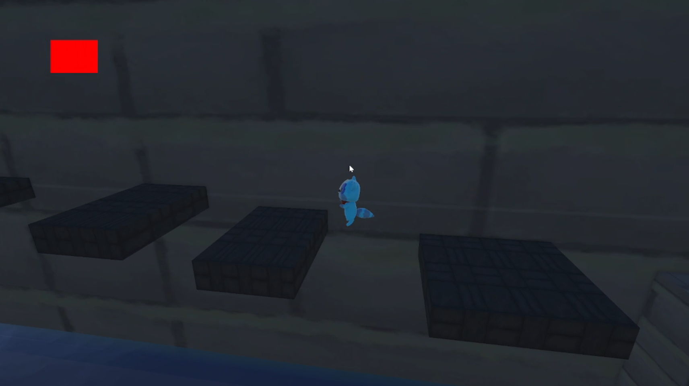

Little Legends is a 3D fast paced sneaky platformer that offers players a unique twist on the genre by incoporating adventure elements and puzzles into gameplay.

After traversing the first level, the player is rewarded with an unique gimmick that allows for a new type of playstyle. The next level then is designed around that playstyle giving the upgrade the player just achieved a bit of playtime.
Once the player has achieved all masks and defeated all bosses they are then the winner of the game!
The player is rewarded with a new mechanic per level so that they can use that new mechanic throughout the game.
Growing up one of my favorite game franchise was Crash Bandicoot & that had so much to do with the brainstorming process early on. At the time the global game jam was revealed and mask made me think of Aku Aku from the franchise and wanted to make a Crash Bandicoot style game.
To keep a cohesive artstyle our team of artists banded together consistently to make sure we are on the same page when it comes to the look of the game. I produced the first couple of models so that the other artists could get a grasp of what the game is going to demand.
When brainstorming the artstyle I knew our team was new to Blender, so I proposed a soft cartoony artstyle. Something that can easily be imagined & beginner friendly to our artists and not too heavy on the textuing part.
As the lead 3D artist for Little Legends I knew I had to set the tone early on given my previous experience working on Factory Fight Club. Quickly we came up with concept art to get an understanding on how we would like the game to look realistically given our talent at the time.